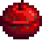

Koponya-barlang

|
Hiányos fordítás Ezt a cikket vagy szakaszt nem fordították le teljesen magyarra. Üdvözlünk az oldal fordításával. |
- For ladder/shaft spawn rates, special monster drops, and the contents of crates and barrels, see The Mines.
The Skull Cavern is located in the northwest area of the Desert. It is initially locked and requires the Skull Key to gain access.
Overview

There is no practical limit to the number of floors (sometimes called levels) in the Skull Cavern.[1] Similar to the Mines, the player advances through floors in the Skull Cavern by finding a ladder on each floor, either by mining rocks or defeating enemies.
Unlike The Mines, there is no elevator to save progress, but on every floor there is a ladder at the starting point where the player can leave the Skull Cavern. Each visit must start again from the first floor.
When ladders to the next floor appear from breaking rocks, 20% of the time they will appear as a shaft (or hole) instead of a ladder. Shafts make it possible to travel 3-15 floors at a time. The number of floors dropped is based on an integer x between 3 and 8 inclusive, chosen with equal probability, with a 90% chance that the player drops x floors and a 10% chance that the player drops 2x-1 floors. The amount of floors dropped is predetermined based on the mine floor, game day, and Random Seed. In particular, Luck does not affect the chances of jumping down a certain number of floors. This also means that if multiple shafts spawn on the same floor, they will all drop the player the same number of floors, so it does not matter which one is chosen. Jumping down the shaft causes Health damage equal to 3x the number of floors skipped (although jumping down a shaft will never reduce health to less than 1). Note that if a shaft above floor 100 is calculated to drop the player past floor 100, it will be modified to only drop the player to floor 100.[2]
If the player runs out of health while exploring Skull Cavern, they will wake up sometime later on the same day in Harvey's Clinic. A fee of  1 000g will be deducted for emergency surgery. Several items may also be lost. Passing out at 2:00 am will cause the player to lose
1 000g will be deducted for emergency surgery. Several items may also be lost. Passing out at 2:00 am will cause the player to lose  1 000g or 10% of funds, whichever is less.
1 000g or 10% of funds, whichever is less.
Iridium
The chance to find Iridium Ore increases slowly and steadily as the player descends into the Skull Cavern, rapidly increasing from floor 10 to 100. See Skull Cavern/Ore Distribution for more details.
The monsters in the Cavern also have a chance to drop ore and Iridium Bars, as well as special items. It can be a good idea to bring the Lava Katana or Galaxy Sword, as enemies are particularly strong.
High Luck increases the frequency of ladders/shafts. Rapid descent to floors with a higher chance of spawning Iridium Nodes is often more efficient for acquiring ore than thorough exploration. Staircases can also be stacked, so a single inventory slot can hold 999 staircases. Even blindly placing staircases will take some time though; the lower the player descends with staircases, the less time they have to explore the caverns.
Qi's Challenge
After entering the Cavern for the first time, a letter will be received on the following day from Mr. Qi. The letter begins the quest Qi kihívása, which is completed by reaching floor 25 in the Skull Cavern. Completing the quest awards  10 000g, delivered by mail the following day. If the player reaches floor 25 of the Skull Cavern during the first visit, the quest will automatically be fulfilled the next day.
10 000g, delivered by mail the following day. If the player reaches floor 25 of the Skull Cavern during the first visit, the quest will automatically be fulfilled the next day.
Qi's Hungry Challenge
"Qi éhes kihívása" is a possible, repeatable Special Order, that may be accepted in Qi's Walnut Room on Ginger Island. It is completed by reaching floor 100 of the Skull Cavern within the given time limit. While this quest is active, no food or drink items can be consumed while the player is in the Skull Cavern. Buffs from food/drink before entering the Skull Cavern will stay active.
While this quest is active, Big Slimes may occasionally have hearts that will give 10 health points when slain. Another strategy to regain health without eating is to equip one or more Vampire Rings or to use a weapon with the Vampiric enchantment.
The use of staircases is permitted. Completing the quest awards  25 Qi Gems.
25 Qi Gems.
Skull Cavern Invasion
The "Koponya-barlang invázió" is a possible, repeatable Special Order, that may be accepted in Qi's Walnut Room on Ginger Island. It is completed by reaching floor 100 of the Skull Cavern within the given time limit. While the quest is active, stronger variations of monsters occupy the Cavern; similarly to the Dangerous Mines. Radioactive nodes can also spawn here, like the Dangerous Mines.
The use of staircases is permitted. Completing the quest awards  40 Qi Gems.
40 Qi Gems.
Idő
Time runs more slowly in Skull Cavern than elsewhere in the game: whereas one hour of game time normally lasts 43 seconds, in Skull Cavern one hour lasts 54 seconds (25% longer). However, time reverts to normal 43-second hours in multiplayer games and on Prehistoric Floors.[3]
This has two main implications:
- Players have more real-time available before the end of the day, and should be able to descend deeper than otherwise.
- The game-time duration of any buff is decreased.
This adjustment in timing has no effect upon other aspects of the game, such as equipment processing times. For example, Honey placed in a Keg at noon is ready with Mead at 10 pm even if the player spends most of that time in the Skull Cavern.
Strategy
Food
Shown below are foods with Buffs that are useful when exploring the Skull Cavern. Note that eating a food with buffs will wipe out any active buffs and replace them with the buffs from the newly eaten food. If the newly eaten food has no buffs, the existing buffs will remain in effect. Coffee, Triple Shot Espresso and Ginger Ale are an exception to this rule; they will stack with other food buffs (but not each other). The Mines
Explosives
Bombs make quick work of densely-clustered stones and ore veins. They can also be used for permanently defeating Mummies.
Bombs can be crafted, or purchased from Dwarf:
| Image | Name | Ingredients | Purchase Price |
|---|---|---|---|
| Cherry Bomb | |||
| Bomb | |||
 |
Mega Bomb |
The Slingshot's Explosive Ammo is also effective in dealing with small groups of stones, Iridium Ore deposits, and incapacitated Mummies. Loading the Slingshot with Gold Ore deals substantial damage, making it potentially useful for dispatching tough targets. Explosive ammo can be crafted, or bought at the Adventurer's Guild for  300g.
300g.
Staircases
Staircases can be used for rapid descent or skipping troublesome floors. If the player has one or more Crystalariums, they can be used to produce Jade which can be traded for Staircases with the Desert Trader on Sundays.
Rings
Several Rings may assist in exploring the Skull Cavern. See the Rings page for full descriptions.
Warp Totems
A Warp Totem can be used to make a quick exit if supplies are running low or the day is almost over to avoid the fee of up to  1 000g for passing out at 2:00 am.
1 000g for passing out at 2:00 am.
A Warp Totem: Desert can be used to access the Desert about 4 hours earlier than Pam arrives at the Bus Stop.
Szörnyek
| Image | Monster | HP | Damage | Notes |
|---|---|---|---|---|
| Armored Bug | 1 | 8 | Can only be killed while using a weapon with the bug killer enchantment. | |
| Big Slime | 60 | 5 | A chance to split into smaller Slimes when killed. Big Slimes are purple in the Skull Cavern. | |
| Purple Slime | 410 | 28 | Can drop Iridium Ore and Iridium Bars. | |
| Lava Bat | 80 | 15 | Only appears on floors 20 and 40; flies. | |
| Mummy | 260 | 30 | Appears on Mummy floors. Needs to be finished with a bomb of any type after being knocked out with other weapons. If a bomb does enough damage to knock the Mummy out, it will also destroy it. Using a weapon with the Crusader enchantment stops them from reviving. Frequently drops Solar Essences when slain, and occasionally drops Cloth. | |
| Serpent | 150 | 23 | Moves quickly; default flying enemy. Frequently drops Void Essence. Occasionally drops Spicy Eel and Bombs. | |
| Iridium Bat | 300 | 30 | Appears at floor 51+ and on prehistoric floors. Very high HP and Damage. Frequently drops Iridium Ore and Solar Essence. | |
| Iridium Crab | 240 | 15 | Appears at floor 26+. Can drop Iridium Ore and Crab Cakes. | |
| Carbon Ghost | 190 | 25 | Can appear on Mummy floors. Frequently drop Omni Geodes. May occasionally drop Refined Quartz. | |
| Pepper Rex | 300 | 15 | Appears mainly on prehistoric floors; breathes fire. Drops Dinosaur Egg or one of 3 prehistoric Artifacts. | |
| Mutant Fly | 66 | 12 | Can appear on prehistoric floors. | |
| Armored Bug (dangerous) | 250 | 20-27 | Only appears when the Skull Cavern is in a "dangerous" state. | |
| Mummy (dangerous) | 445 | 38-55 | Only appears when the Skull Cavern is in a "dangerous" state. | |
| Royal Serpent | 300-1050 | 32-48 | Only appears when the Skull Cavern is in a "dangerous" state. | |
| Purple Slime (dangerous) | 403 | 20-30 | Only appears when the Skull Cavern is in a "dangerous" state. |
Őskori szintek
Prehistoric floors are a type of infested floor containing mainly Pepper Rex monsters. Mutant flies and Iridium Bats can also spawn and attack the player there. Dinosaur Eggs and Fiddlehead Ferns can be foraged on Prehistoric floors. Foliage on this floor has a chance to yield an Ancient Seed when cut down. There is a ~2.2% chance to encounter a prehistoric floor at and below floor 7.[4]
Because prehistoric floors are infested, all enemies on this floor must be killed before a ladder appears.
Kincses szobák
Small rooms containing treasure chests, similar to those in The Mines, can randomly appear at floors 10+. Daily luck and Luck Buffs affect the chance to find Treasure Rooms.
The probability of encountering one when entering a new floor equals to 0.01 + (Daily Luck / 10) + (Luck Buffs / 100)[4]. This means Treasure Rooms have a base chance of 1% to appear with daily Luck increasing the chance by 1% at best or decreasing by 1% at worst, with the Special Charm adding 0.25%, and food buffs adding 1% for every point of Luck. In multiplayer, the luck values taken into account are the average of luck stats of players present in the Skull Cavern.
Floor 100 of the Skull Cavern is guaranteed to contain a treasure chest. The only exception is during the run where the player completes the secret.
Below is a table of all possible treasures that can be randomly found inside Treasure Chests in the Skull Cavern.
Secret
After reading Secret Note #10, the player will find Mr. Qi at floor 100 of the Skull Cavern. A cutscene ensues in which:
| Részletek |
|---|
| Mr. Qi will either congratulate the player for reaching floor 100 while using 10 or fewer Staircases or say the player is "clever" but not "honorable" for using more than 10. In either case, he will award the player with Iridium Snake Milk, which permanently increases the player's health by 25 points. |

Trivia
- The plaques that can be occasionally found on the walls contain enciphered messages.
- To reach the integer limit, the Quarry Mine Floor would need to be bypassed, which has no ability to produce a ladder. This floor is coded as 77377, and can be found at floor 77257 of the Skull Cavern, (which counts floor 1 as floor 121 internally). [6]
- Starting at floor 880, Iridium Bats will become red bats and have double health and faster speed.[7]
References
- ↑ The integer limit is 2147483647. To reach that limit in one Stardew Valley day, the player would have to descend over 2 million floors per real-time second.
- ↑ See MineShaft::enterMineShaft in the game code.
- ↑ See MineShaft::getExtraMillisecondsPerInGameMinuteForThisLocation and Game1::UpdateGameClock in the game code.
- ↑ 4,0 4,1 See MineShaft::loadLevel in the game code.
- ↑ See MineShaft::getTreasureRoomItem in the game code.
- ↑ See Locations.MineShaft::quarryMineShaft in the game code.
- ↑ See StardewValley.Bats::Bat in the game code.
History
- 1.3.27: Added Carbon Ghost, Iridium Bat, Iridium Crab, Treasure Rooms, and encounter with Mr. Qi. Removed exploit that allowed the player to avoid bomb damage by consuming food after placing a bomb.
- 1.4: Added Pepper Rex. Added White Turban to possible Treasure Room items. All players entering a shaft in Multiplayer now descend to the same floor. Qi's challenge can now be completed during the first visit to the Skull Cavern. Shafts will no longer drop the player past floor 100.
- 1.5: Added Auto-Petter to possible Treasure Room items. Fixed chests spawned on certain floors being shifted down by 4 tiles. Fixed message appearing when opening a treasure room chest before opening the initial 15 Parsnip Seeds given by Mayor Lewis.
- 1.5.2: Added Dark Cowboy Hat to possible Treasure Room items.
- 1.5.5: Reaching floor 100 will result in a guaranteed treasure chest, except when viewing the secret cutscene.
| Helyszínek | |
|---|---|
| Helyszínek | Alagút • Bányák • Boszorkány mocsár • Buszmegálló • Calico Sivatag • Csatorna • Csille • Csúcs • Farm • Farm barlang • Farm tavacska • Gyömbér-sziget • Hátsó Erdő • Hegyek • Kőfejtő • Kőfejtő bánya • Koponya-barlang • Mesterképességek barlangja • Mutáns bogár odú • Pelikán Város • Strand • Temető • Titkos Erdő • Tufanedv-erdő • Vasút • Vulkán kazamata |